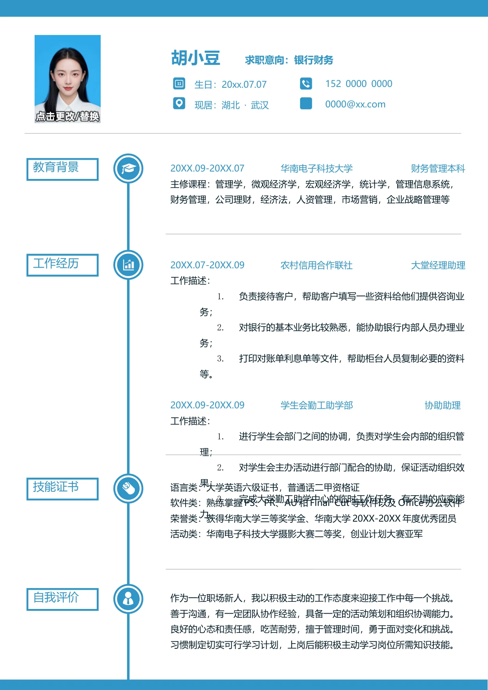

胡小豆
求职意向：银行财务
20XX.09-20XX.07 华南电子科技大学 财务管理本科
主修课程：管理学，微观经济学，宏观经济学，统计学，管理信息系统，
财务管理，公司理财，经济法，人资管理，市场营销，企业战略管理等
20XX.07-20XX.09 农村信用合作联社 大堂经理助理
工作描述：
1.
负责接待客户，帮助客户填写一些资料给他们提供咨询业
务；
2.
对银行的基本业务比较熟悉，能协助银行内部人员办理业
务；
3.
打印对账单利息单等文件，帮助柜台人员复制必要的资料
等。
20XX.09-20XX.09 学生会勤工助学部 协助助理
工作描述：
1.
进行学生会部门之间的协调，负责对学生会内部的组织管
理；
2.
对学生会主办活动进行部门配合的协助，保证活动组织效
果；
3.
完成大学勤工助学中心的临时工作任务，有不错的应变能
力。
语言类：大学英语六级证书，普通话二甲资格证
软件类：熟练掌握PS、PR、AU 和Final Cut 等软件以及Office 办公软件
荣誉类：获得华南大学三等奖学金、华南大学20XX-20XX 年度优秀团员
活动类：华南电子科技大学摄影大赛二等奖，创业计划大赛亚军
作为一位职场新人，我以积极主动的工作态度来迎接工作中每一个挑战。
善于沟通，有一定团队协作经验，具备一定的活动策划和组织协调能力。
良好的心态和责任感，吃苦耐劳，擅于管理时间，勇于面对变化和挑战。
习惯制定切实可行学习计划，上岗后能积极主动学习岗位所需知识技能。
教育背景
工作经历
技能证书
自我评价
152 0000 0000
0000@xx.com
生日：20xx.07.07
现居：湖北 · 武汉